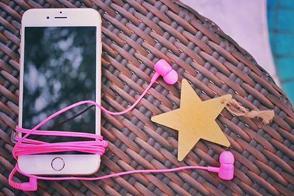

創作物の宝物庫-MUSICエリア-世界に楽しいを届けて(カスタマイズ)

ここでは、MUSICを聴いて頂きます
私が作成した代物になります
興味を持っていただけると幸いです
Supported by Kanon Shirakumo
- 世界に楽しいを届けて(カスタマイズ)
ポイント:私と貴方の出会いと物語が綴られている。楽しい、届けたい、世界に伝わってほしいという思いが込められている歌唱曲。特に重音テトによる歌唱がされていることであまり不快感が感じられないと思う。より思いを感じられる曲。
歌詞:私（わたし）は貴方（あなた）に出会った（であった）ー
楽しく（たのしく）歌って（うたって）いる貴方（あなた）に出会った（であった）
貴方（あなた）の歌声（うたごえ）はとても綺麗（きれい）で、とても楽しそう（たのしそう）な声（こえ）だった聴いている（きいている）私（わたし）まで楽しく（たのしく）なってきた貴方（あなた）の歌（うた）を聴いている（きいている）
なんて思って（おもって）いたけれど、それが確信（かくしん）に変わった（かわった）のは私（わたし）が求めていた（もとめていた）声（こえ）それが貴方（あなた）だ私（わたし）は確信（かくしん）した楽しい（たのしい）を届ける（とどける）にはどうすれば良い（いい）のかそう、歌え（うたえ）ば良かった（よかった）の心（こころ）の底（そこ）から楽しく（たのしく）歌う（うたう）だけで私（わたし）の心（こころ）はー
満たされて（みたされて）いくのその歌（うた）を一緒（いっしょ）に歌う（うたう）だけで満たされて（みたされて）いくのああ私（わたし）は寂しかった（さびしかった）のね楽しい（たのしく）歌う（うたう）事（こと）すらも忘れて（わすれて）
歩き続けていた（あるきつづけていた）この世界（（せ）かい）に楽しい（たのしい）を届けて（とどけて）いくために一度（いちど）立ち止まろう（たちどまろう）ー
私（わたし）の心（こころ）は疲弊（ひへい）していたの誰彼構わず（だれかれかまわず）見て（みて）ほしくて空回り（からまわり）していたのああ
貴方（あなた）と私（わたし）、一緒（いっしょ）に歌えば（うたえば）楽しい（たのしい）が二倍（にばい）になって幸せ（しあわせ）に近づく（ちかづく）と思いたい（おもいたい）ー
私（わたし）と貴方（あなた）一緒（いっしょ）に歌う（うたう）だけで世界（せかい）に楽しい（たのしい）を届けて（とどけて）行ける（いける）と確信（かくしん）したの
でした
また貴方（あなた）と歌いたい（うたいたい）と思う（おもう）私（わたし）です
あの時（とき）私（わたし）はあそこで歌う（うたう）のを辞めて（やめて）しまったけれど、貴方（あなた）は違い（ちがい）
また別（べつ）の所（ところ）で歌い出した（うたいだした）でも私（わたし）は声（こえ）を合わせられ（あわせられ）なくて
逃げてしまった（にげてしまった）のー。私（わたし）は振り返った（ふりかえった）けれど誰（だれ）も居なくて（いなくて）家（いえ）に帰ろう（かえろう）と動いた（うごいた）
家（いえ）に帰って（かえって）も誰（だれ）も居ない（いない）家（いえ）では寂しくて（さびしくて）寂しくて（さびしくて）悲しい（かなしい）
楽しい記憶（たのしいきおく）を重ねて（かさねて）も寂しさ（さびしさ）が埋まる事（うまること）は無くて（なくて）最悪（さいあく）の気分（きぶん）に落ち込んでる（おちこんでる）
心（こころ）の拠り所（よりどころ）は在れど（あれど）相談（そうだん）は出来なくて（できなくて）楽しい（たのしい）時間（じかん）を探していた（さがしていた）
楽しい（たのしい）記憶（きおく）を重ねる（かさせ（ね）る）為（ため）に道（みち）を戻って（もどって）探した（さがした）けれどやっぱり居ない（いない）
そんな悲しみ（かなしみ）に暮れて（くれて）いたけれど私（わたし）は後ろ（うしろ）から掛けられた（かけられた）声（こえ）に驚いていた（おどろいていた）のー
捜していた（さがしていいた）貴方（あなた）が底（そこ）に居た（いた）また楽しい（たのしい）時間（じかん）になったことに嬉しく（うれしく）なり
涙（なみだ）が零れて（こぼれて）いくのだったそれと心（こころ）がぽかぽかするような楽しい（たのしい）気持ち（きもち）になる
心（こころ）を取り戻して（とりもどして）くれてありがとうと私（わたし）は言う（いう）のです
貴方（あなた）は嬉しい（うれしい）
顔（かお）をしてどういたしましてと言って（いって）くれたよね。私（わたし）は楽しい（たのしい）の